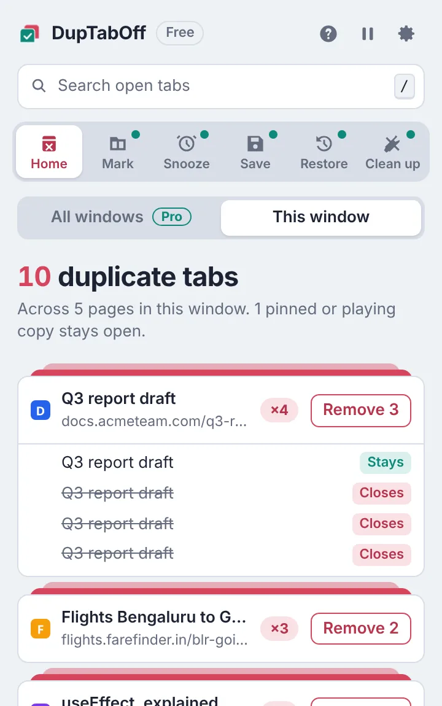
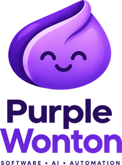
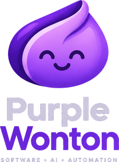

Chrome 拡張機能
DupTabOff
タブが多すぎて、そのうち 3 つが同じページ？ DupTabOff は複数開いているページを見つけ、余分なタブをワンクリックで閉じます。Pro なら、重複タブが開く前に防ぐこともできます。
DupTabOff を見る
無料。Lifetime Pro は $4.99 の買い切り

Purple Wonton はベンガルールのテクノロジースタジオです。繰り返しの作業から解放してくれるモダンなソフトウェアを設計・開発しています。軽快で、プライバシーを最初から考えて設計し、実際のブラウザでテストしてからお届けします。


すばやく動き、作業の邪魔をしないブラウザ拡張機能とアプリ。最新のウェブ標準で開発し、古いデバイスでも動くようにしています。
毎日使うツールに組み込まれた実用的な AI。あなたの作業を理解し、デモではなく実際の時間を節約します。
繰り返しのクリックをワンアクションに、あるいはゼロに。面倒な作業はコンピュータに任せて、あなたは考えることに集中できます。
Purple Wonton の製品は、ひとつの仕事をとことん上手にこなし、データをあなたのデバイスに保ち、望まないサブスクリプションなしの公正な価格でご提供します。
Chrome 拡張機能
タブが多すぎて、そのうち 3 つが同じページ？ DupTabOff は複数開いているページを見つけ、余分なタブをワンクリックで閉じます。Pro なら、重複タブが開く前に防ぐこともできます。

新しい製品を開発中です。次につくってほしいもののアイデアは support@purplewonton.com までお寄せください。
support@purplewonton.com までご連絡ください。すべてのメッセージに目を通しています。